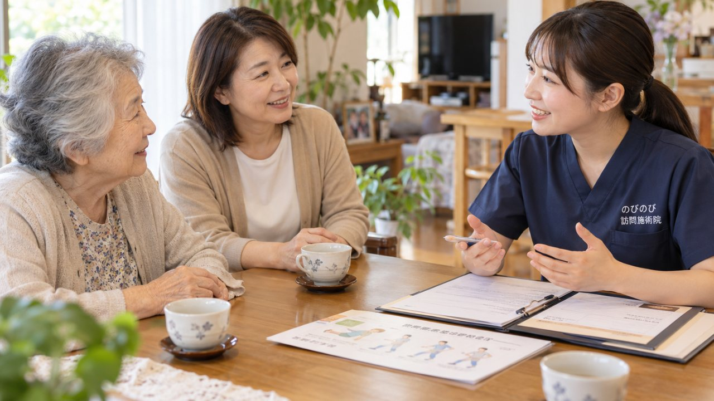

訪問鍼灸マッサージで保険を使うには、医師の「同意書」が必要、この一言でつまずき、問い合わせをやめてしまう方はよくいらっしゃいます。けれど、ご家族がご自身で動く場面はそれほど多くありません。用紙の準備も、医療機関とのやりとりの段取りも、のびのびが代わりに進めるからです。ここでは、同意書とはどんな書類で、誰にどう頼み、何を記入してもらい、いつ更新するのかを、順を追ってご説明します。
この記事のポイント
同意書は、かかりつけの医師が「鍼やお灸による治療が必要」と認める書類で、保険適用のスタート地点になります。頼む相手は内科でも整形外科でも、ふだん診てもらっている主治医で問題ありません。受診のついでに、こちらで用意した用紙を渡して記入をお願いする形が基本です。有効期限はおおむね半年で、その後は再同意が必要になります。保険はすべて鍼灸で算定し、1回の施術は総額3,950円、自己負担は1割で約395円が目安です。
医師の同意書とは、どんな書類なのか
はり・きゅうを医療保険で受けるとき、その入口になるのが医師の同意書です。正確には「療養費」という仕組みで施術を受けることになり、そのためには、ふだん診てもらっている医師が「この方には施術が治療上必要だ」と認めた一枚の書類が要ります。これが同意書です。
診断書のように長い審査があるわけではありません。かかりつけの先生が体の状態を診たうえで、所定の用紙に記入してくださる。それだけです。逆に言えば、この書類がないと保険は使えず、全額自費の扱いになってしまいます。ですから、施術を始める前にまず用意しておきたい書類なのです。
なお、どの科の先生でも書いていただけます。整形外科でなくてもよく、内科のかかりつけ医や訪問診療の先生でも構いません。その点については「医師の同意書は何科でもらえる？」で詳しくご紹介しています。なぜ同意書がないと保険が使えないのか
療養費は国の定めた枠組みで、医師が必要性を認めた場合に限って保険が適用されます。医師の判断を経ずに保険を使うことはできない仕組みになっているため、同意書が欠かせません。ちなみに、この制度を利用するのに要介護認定は必要ありません。介護保険を使っていない方でも受けられますし、すでに介護保険のサービスを限度額いっぱいまで使っている方でも、別枠なので併用できます。
はり・きゅうで保険の対象になる症状は、神経痛・リウマチ・頸肩腕症候群・五十肩・腰痛症・頸椎捻挫後遺症の6つと決められています。ご自身の状態が当てはまるか気になる方は、「神経痛は保険で受けられる？」もあわせてご覧ください。なお、施術は痛みやこわばりをやわらげ、生活を楽にしていくためのもので、病気そのものを治す治療ではありません。効き方には個人差があることも、はじめにお伝えしておきます。
同意書を受け取るまでの流れ
手順そのものは、思っているより単純です。まずかかりつけの医師に「訪問で鍼灸を受けたいので同意書をお願いしたい」と相談します。相談先は内科でも整形外科でもかまいません。ふだん通っている科であれば専門は問われません。
次に、当院で同意書の用紙と、どこに何を記入していただくかのポイントをまとめてお渡しします。あとは定期受診のときにそれを持参して、先生に記入してもらうだけ。書いていただいた同意書を当院にお預けいただければ、そこから保険での施術がスタートします。ご家族が病院に一からお願いに行ったり、複雑な書類をご自分でそろえたりする必要はありません。段取りはこちらで組みます。
「先生に頼みにくい」と感じている方へ
実際にいちばん多いのが、この不安です。先生に切り出しづらい、忙しそうで頼みにくい、断られたら気まずい。そう感じて足踏みしてしまう方は少なくありません。
そこを軽くするために、当院では用紙だけでなく、先生への渡し方や簡単な説明の言葉まで用意しています。「訪問で施術を受けたいので同意書をいただけますか」と一言添えて用紙を差し出せば、たいていはその場で済みます。わざわざ同意書のために予約を取り直す必要もなく、いつもの受診のついでで完結することがほとんどです。
同意書には有効期間がある
注意しておきたいのが、同意書は一度もらえばずっと使える、というものではない点です。有効期間が定められていて、施術を続けるには期間ごとに改めて医師の再同意が必要になります。目安としては、おおむね半年ごとに更新していくイメージです。
期間は決まっています。厚生労働省の取扱いでは、同意書にもとづいて療養費が支給されるのは6か月です。6か月を超えて続けるときは、あらためて保険医から同意書の交付を受けることになります。数え方や、更新が間に合わなかったときの扱いは「同意書は何か月で更新？有効期間と手続き」で詳しくご紹介しています。
もうひとつ知っておいていただきたいのが、再同意のときも医師の診察が必要だという点です。書類だけを郵送して署名をもらう、という形は認められていません。電話や口頭のやりとりで済ませることもできず、そのつど同意書という文書の交付を受ける決まりです。ですから、更新の時期には受診の予定を入れていただくことになります。通院がむずかしい方は、訪問診療の先生にお願いする形も取れますので、ご相談ください。
とはいえ、更新の時期をご家族が覚えておく必要はありません。次の同意がいつ必要になるかは当院で管理し、時期が近づいたらこちらからお声がけします。うっかり切れて保険が止まってしまう、といったことがないようにお預かりする部分です。
文書料は施術料とは別にかかることがある
もう一つ正直にお伝えしておきたいのが、同意書の作成に対して医療機関が文書料を求める場合があることです。金額は医療機関ごとに異なり、数百円程度のところもあれば、もう少しかかるところもあります。これは病院に支払うもので、当院の施術料とはまったく別のお金です。
参考までに、施術そのものの費用は1回の総額が3,950円。保険適用後の自己負担は、1割の方で約395円です。たとえば週2回受けた場合、1割の方の負担は月におよそ3,160円になります。機能訓練が必要な場合も鍼灸に加えて行うもので、追加料金はいただきません。文書料はあくまでこれとは別枠、と考えていただければ分かりやすいと思います。
もし医師に断られてしまったら
ときには、主治医から同意をもらえないこともあります。方針として書かないという先生もいますし、施術についてよく知らないために慎重になる先生もいます。断られると、そこで諦めてしまいがちです。
ただ、そうなっても打つ手はいくつかあります。別の医療機関にあたる方法や、先生に施術内容を正しく伝える工夫など、状況に応じた進め方があります。具体的な対応は「同意書を断られたら？対処法」で詳しくご紹介していますので、行き詰まったと感じたときは、一度目を通してみてください。ひとりで抱え込まず、まずは当院にご相談いただければ、一緒に次の一手を考えます。
よくある質問
同意書はどこでもらえますか？
かかりつけの医療機関の診察の場で、医師に記入してもらいます。用紙そのものはこちらで用意してお渡しするので、ご家族が役所などで取り寄せる必要はありません。すでに通院されている方なら、その受診のついでにお願いできることがほとんどです。
同意書は誰に書いてもらえばいいですか？
ふだん診てもらっているかかりつけの先生で大丈夫です。内科でも整形外科でも、訪問診療の主治医でもかまいません。専門科である必要はなく、あなたの状態を診て治療が必要と判断していただければ進められます。
かかりつけ医がいない場合はどうすればいいですか？
まず一度受診して診てもらうところから始められます。施設に入居されている方なら、その施設の協力医（嘱託医）に相談できることもあります。どこに頼めばいいか迷うときは、状況を伺ってこちらでご案内します。
先生が鍼灸に詳しくなくても、書いてもらえますか？
先生が鍼灸の専門家である必要はありません。あなたの状態を診て、治療が必要と判断していただければ大丈夫です。判断の材料になる情報や制度の説明は、依頼書に添えてこちらから先生にお伝えします。
同意書を書いてもらえないときはどうなりますか？
制度の説明を添えた依頼書をお渡しし、それでもむずかしければ補足の情報をお伝えするなど、いくつかの方法があります。主治医が変わったときも新しい先生に同じように依頼できます。断られたときの詳しい進め方は「同意書を断られたときの対処法」のページでご案内しています。
同意書に有効期限はありますか？
おおむね半年ごとに医師の再同意が必要です。期間が来たら、あらためて診てもらって書いていただく形になります。その時期の管理はこちらで行い、近づいたらご案内するので、ご家族が期限を覚えておく必要はありません。
同意書に費用（文書料）はかかりますか？
医療機関によって、文書料が数百円から数千円ほどかかる場合があります。金額は病院により異なり、かからないところもあります。心配なときは、受診の際に窓口で確認しておくと安心です。
同意書をもらう前に、施術を試すことはできますか？
保険を使った施術は同意書が前提になりますが、まずは体の状態を見せていただく相談から始めることはできます。対象になりそうかを確かめてから同意書の手続きに進めるので、順番に進めていきましょう。
この記事の根拠
はり・きゅう、あん摩マッサージ指圧の療養費は、厚生労働省が定めた取扱いにもとづく制度です。制度そのものをご自身で確かめたいときは、厚生労働省の療養費について（新しいタブで開きます）をご覧ください。「被保険者のみなさまへ」の案内も、同じページからたどれます。
同意書の書式は、厚生労働省がはり、きゅう及びあん摩マッサージ指圧の同意書の取扱い（新しいタブで開きます）で公開しているものと同じです。